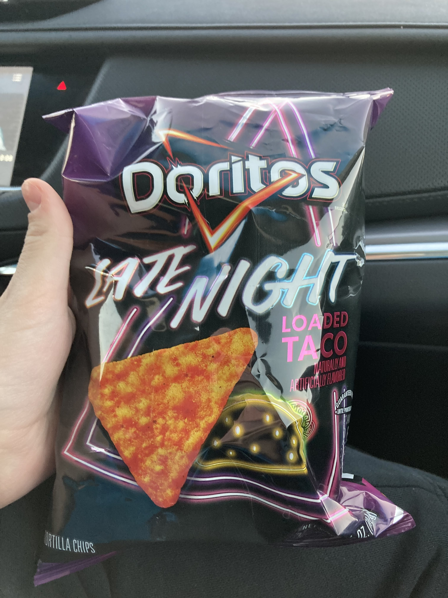

The bag of chips in me mom's car vroom vroom 🚗
They had these things at the gas station near my mom's house so I picked 'em up and ate them. And here's the review, which I wrote down during and after the process.
As typed, ahem...
11/16/2025 at 5:16 PM CST:
You know they do smell like a bagged taco with cool ranch
They kind of taste like soy sauce ramen mixed with generic tortilla chips
There's a real cool ranchness to them
Just had one with much more dorito dust and there's absolutely the flavor of cheap ground meat
No meat dust in the ingredient list
They're like the tiniest bit spicy
There's a hint of lettuce when you first bite into them which is really weird
I guess if I think about tomatoes I can kind of sort of taste a tiny bit of tomato in there. There's tomatoes on the cover so that's why I'm trying
The idea of tomato is most present in the aftertaste
The very very back of my throat there's like 2% tomato
You know now that I'm having quite a few there is some nacho cheese in the flavor profile too
Just had the motherlode of dusted chips and yeah actually there's a bit more tomato
11/16/2025 at 5:25 PM CST:
Overall it's not as fantastical a flavor as cool ranch or nacho cheese. Idk. I'm not a big fan of hardshell tacos either so
11/16/2025 at 6:40 PM CST:
It's got a very potent lasting aftertaste. It's been over an hour and I've still got something in the back of my throat. I'm trying to think about what it reminds me of
It's the same long-lasting aftertaste as a Taco Bell Cheesy Gordita Crunch with potatoes instead of beef
That's kinda what this throat thing tastes like
But more umami
And darker
11/16/2025 at 9:51 PM CST:
Hours later and there's a garlic aftertaste
A bready garlic. Like garlic bread
"Someone has damaged you. Badly and with intent. Over time."
Oh yeah, I was reading Jeff VanderMeer's Absolution on the plane. Absolutely phenomenal book, holy kamoly. I would definitely rate Absolution higher than the Doritos® Light Night Loaded Taco. And these chips are by